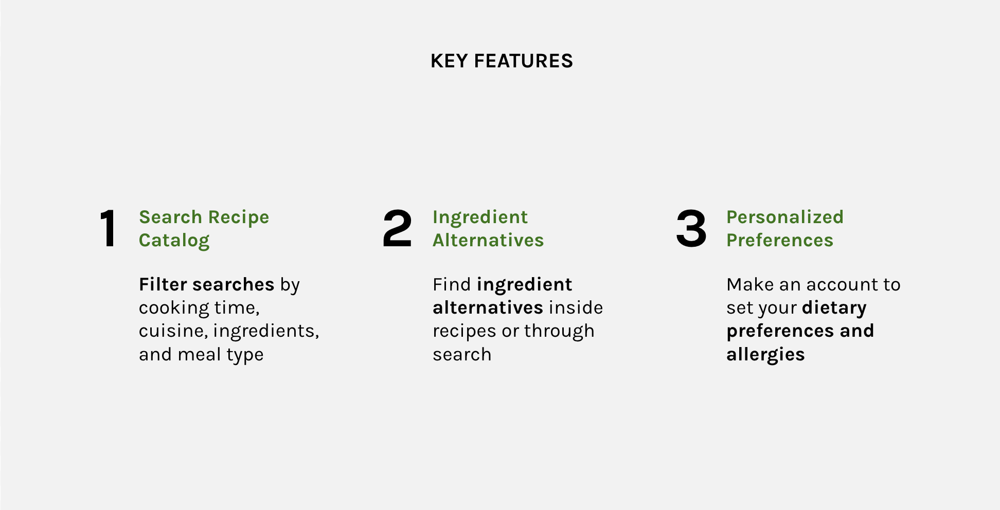
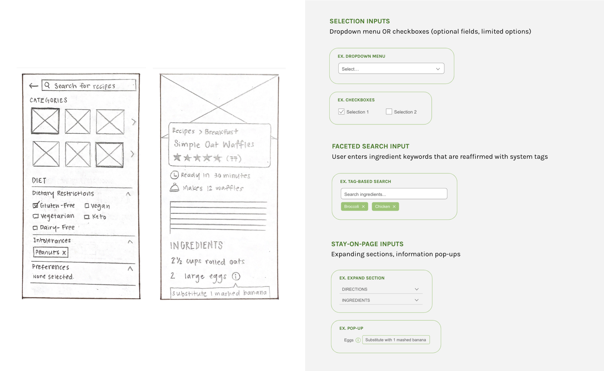
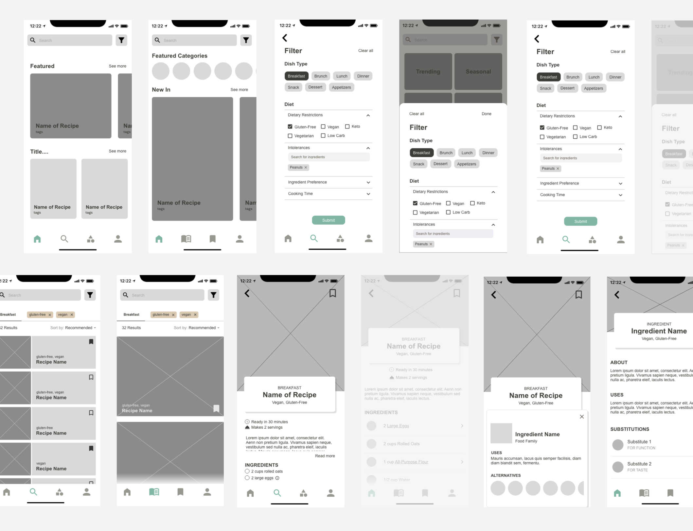

As a two-month academic project, PROXI is a mobile recipe app for selective
eaters to find recipes catering to their dietary needs while promoting food exploration.
domain problem
THE PROCESS
content & needs
In the early stages of the process, we sought out the hierarchy of needs, a
list of goals that should be met and use them as our guiding principles.
1. Easily find diet-specific recipes, reducing hassle and discouragement
2. Avoid ambiguity of finding suitable alternatives themselves
3. Feel positive and encouraged to try new recipes & cuisines
considerations
Through different research methods and iteratins, we found that:
1. People find it hard to modify existing recipes
2. Selective eaters have lower quality of life due to food-related stress, and
3. They struggle to find acceptable food, potentially not eating at all

the main key features
the idea and framework
The target users we focused on were young adults (20-29), that: "Poor dietary
behaviours are of particular concern for young adults...The barriers experienced by young adults making
different food choices can be driven by life stage changes.”
∘ Preliminary Research
∘ Sitemaps & User Personas
∘ Sketches
∘ Style Guide
∘ Wireframes (medium-fidelity)
∘ Mockups (high-fidelity)
∘ User Testing
User Persona 1User Persona 2
early iterations
In the early stages of our iteration process, we created sketches, designed
different input selections and got primitive feedback from our peers, teaching assistant and proffesor.
We also conducted a few research studies and gathered further information on the needs and goals of our
users.
We created medium-fidelity mockups and began comparing the different designs
we had. By comparing and constrasting with reasonable explanation and reasoning, we were able to choose
a design to go forward with. As the timeline came to a close, we were able to successfully mockup the
project and we created the prototype through UX Pin, allowing us to demonstrate the UX design and allow
others to test it. We then began troubleshooting and fixing any errors and concerns that arose from user
testing.


finale
As the project came to an end, I can definitely say I've learned a lot. From
learning about usability heuristics and being able to apply it to work projects and assignments, it has
greatly improved my skills and I will be applying these skillsets to the future projects I do.